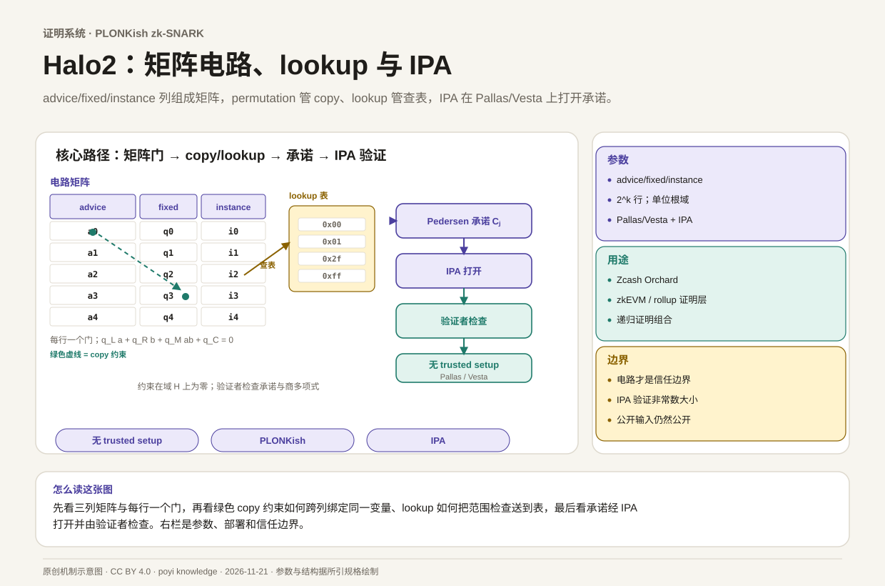
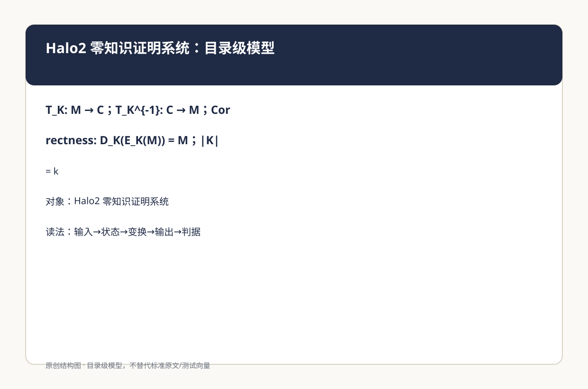

原理与机制
算法：Halo2 证明系统（Halo2）。### PLONKish 矩阵
Halo2 把电路写成矩阵：列分 advice、fixed、instance 三类，行是门。每个门用多项式约束把相邻行、多个列连起来；custom gate 允许一个门同时读多列，lookup argument 把某列的值约束到一张表里。行数取 2^k，在单位根域上做多项式插值，约束在整域上为零。### 置换、lookup 与 IPA
copy constraint 用 permutation argument 强制两格相等；range check 用 lookup 查表。证明端对列多项式做 Pedersen 承诺，用内积论证（IPA）在 Pallas/Vesta 上打开；没有配对，也没有可信设置。Fiat–Shamir 把交互变成非交互证明，验证者只查承诺、采样点和商多项式。

为什么重要
Halo2 不需要 trusted setup：公共参数由固定曲线生成，不存在“toxic waste”。PLONKish 的列和门可以按电路定制，lookup 让 8 位/16 位范围检查不必写成一长串约束；IPA 只依赖离散对数，不引入配对曲线。递归组合让证明可以验证证明，适合 rollup 和隐私池这类多层电路。### 代价
透明设置不是免费的：IPA 的证明和验证比 Groth16 重，递归验证器本身要占不少行。Halo2 把“设置阶段的一次性风险”换成“证明阶段的持续计算成本”，适合电路多、迭代快、无法办可信仪式的团队。
应用与实例
Zcash 的 Orchard shielded pool 用 Halo2 证明“我知道注记的见证，且资金满足禁令”。PSE 的 halo2-lib 把 EVM 兼容电路搬进 Halo2，用于 zkEVM 的证明层；递归聚合把多个应用证明压成一个外层证明。### 库与生态
Halo2 的 Rust 实现提供 halo2_proofs 与 halo2_gadgets，后者包含 Sinsemilla、ECC、lookup 等常用芯片。它也被若干隐私应用和 rollup 用作证明后端；具体部署要核电路版本和参数，而不是只看“用了 Halo2”这一句。

边界与攻击面
Halo2 没有可信设置，不等于没有信任：约束系统、lookup 表和公开输入由应用方定义，门写错或漏约束会让证明“证明了一个错误陈述”。IPA 的验证不是常数大小，递归验证器要吃掉不少行；证明时间与电路规模、列数和 lookup 数量线性相关。它也不自动提供“输入隐私”，公开输入仍然公开。### 工程风险
Halo2 的电路需要手工安排列、行和门，列数不足会让电路膨胀，lookup 表过大会拖慢证明。参数（k、列数、lookup 位宽）选错会造成性能断崖；升级库版本也可能改变 transcript 或参数，必须重新做可信度评估。
历史与背景
Halo 在 2019 年提出用 IPA 替代可信设置，论文是 ePrint 2019/1021；Halo2 在 2020 年把 PLONK 的 arithmetization 与 Halo 的递归思路合成 PLONKish 矩阵，随后进入 Zcash Orchard。2022 年 NU5 升级让 Orchard 在主网上线，Halo2 也从一条链的内部工具变成通用证明库。### 命名
Halo 与 Halo2 不是“第二版协议”那么简单：Halo2 的核心变化是 PLONKish 的列式 arithmetization 和 lookup，IPA 仍来自 Halo。读旧论文时要区分 Halo 的 R1CS 表述与 Halo2 的矩阵表述。
技术参数与复算边界
该条目的形式模型是 (C=E_K(P;r),\qquad P=D_K(C))。输入：输入：Halo2 证明系统的公开参数、密钥/随机数与消息；变量说明：P 明文，C 密文，K 密钥，r 随机化参数。 预期输出：按 Halo2 证明系统 的规范执行后得到可验证的输出或可比较的优势界。 复算必须给出输入、步骤、输出和单位；示例只演示流程，不替代标准测试向量。
复杂度由密钥长度、分组/状态规模、轮数、随机数质量和敌手模型共同决定；参数越界、版本差异与实现侧信道都可能使公式结论失效。已登记限制：该条目只给出形式模型与可复算步骤，不声称已完成生产实现、侧信道认证或第三方安全评估。
逐步示例与核验
形式模型与复算步骤
[C=E_K(P;r),\qquad P=D_K(C)]
Halo2 证明系统的公开参数、密钥/随机数与消息；变量说明：P 明文，C 密文，K 密钥，r 随机化参数。1.按算法规范编码输入。2.在密钥控制下执行轮函数。3.输出密文并检查长度与格式。边界：公式只覆盖已登记的参数与假设；参数取值、标准版本和实现细节仍以来源为准。
参考出处
- Wikipedia search entry for Halo2 证明系统. https://zh.wikipedia.org/w/index.php?search=Halo2%20%E8%AF%81%E6%98%8E%E7%B3%BB%E7%BB%9F
- Handbook of Applied Cryptography (Menezes, van Oorschot, Vanstone). https://www.cacr.math.uwaterloo.ca/hac/